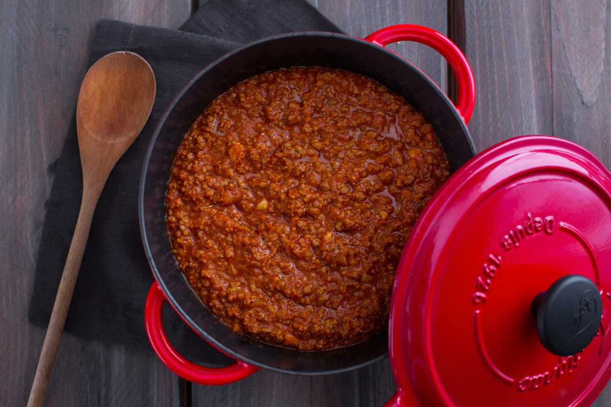

Ragù alla Bolognese

Description
This is the official updated recipe for Ragù alla Bolognese (PDF), as deposited by the Accademia Italiana della Cucina at the Chamber of
Commerce of Bologna on April 20, 2023. The recipe reflects extensive
research and aims to preserve the traditional flavors while acknowledging
modern improvements in ingredients and cooking techniques.
Ingredients
- 400g coarsely ground beef
- 150g fresh pork pancetta, sliced
- 60g onion (half an onion)
- 60g carrot (one carrot)
- 60g celery (one stalk)
- 1 glass of red or white wine
- 200g tomato purée
- 1 tablespoon tomato paste
- 1 glass whole milk (optional)
- Light meat or vegetable broth (can use bouillon)
- 3 tablespoons extra virgin olive oil
- Salt and pepper to taste
Instructions
-
In a heavy non-stick or enamelled cast iron pan (traditionally a 24-26
cm terracotta pot was used), melt the chopped pancetta with 3
tablespoons of oil.
-
Finely chop the onion, carrot, and celery (do not use a mixer) and add
to the pancetta. Sauté slowly over medium-low heat, stirring constantly
with a wooden spoon until the vegetables are softened. Avoid browning
the onion.
-
Increase the heat and add the ground beef. Cook for about ten minutes,
stirring constantly, until the meat sizzles.
-
Add the wine and let it evaporate completely until there is no wine
aroma. Then, add the tomato paste and purée, mixing well.
-
Add a cup of hot broth (or water) and simmer covered for about 2 hours
(up to 3 hours depending on preference and type of meat), adding more
hot broth as needed.
-
Halfway through the cooking time, optionally add the milk and let it be
absorbed completely. Adjust the seasoning with salt and pepper at the
end of cooking. The ragù should be a rich dark orange color, creamy and
well-blended.
Notes
Traditionally, the "cartella" (beef diaphragm) was used, which is hard to
find today. Alternatively, cuts rich in collagen such as muscle, shoulder,
chuck, flank, and brisket are preferred. Mixed meats can also be used. A
modern method suggests browning the meat separately and then combining it
with the sautéed vegetables.
Permitted Variations
- Mixed meats: 60% beef and 40% pork (loin or neck)
- Hand-chopped meat
- Flat or rolled pancetta instead of fresh pancetta
- A hint of nutmeg
Prohibited Variations
- Veal
- Smoked pancetta
- Only pork meat
- Garlic, rosemary, parsley, other herbs or spices
- Brandy instead of wine
- Flour (to thicken)
Enhancements
- Chicken livers, hearts, and gizzards
- Crumbled pork sausage
- Blanched peas added at the end of cooking
- Rehydrated dried porcini mushrooms
Preparation time: 30 minutes
Cooking time: 2-3 hours
Number of guests: 6